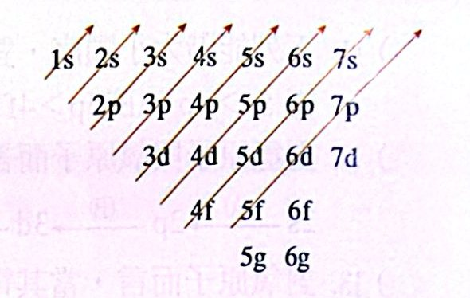
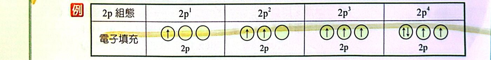
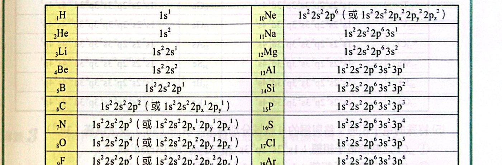
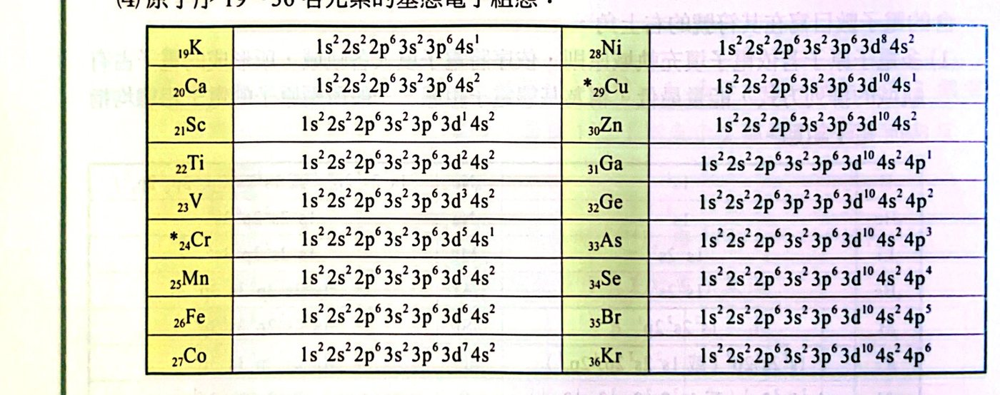
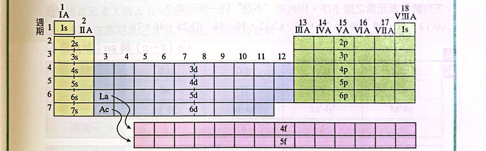

重點整理
一、電子組態
1. 定義
原子中各電子占有軌域的排列方式，稱為該原子的「電子組態」。
寫法：3d4 → 3 是主量子數、d 是軌域種類、右上角 4 是電子數。
2. 電子填充軌域的三大原則
(1) 遞建原理（構築原理）：電子先進入能階較低的軌域，填滿後再進入較高的軌域。
1s ＜ 2s ＜ 2p ＜ 3s ＜ 3p ＜ 4s ＜ 3d ＜ 4p ＜ 5s ＜ 4d ＜ 5p ＜ 6s ＜ 4f ＜ 5d ＜ 6p ＜ 7s …

電子填充順序（斜線法）
(2) 包立不相容原理：每個軌域最多 2 個電子，且兩電子自轉方向相反（同一原子中不會有四個量子數完全相同的兩個電子）。
- 例：He 的兩個電子 (n, ℓ, mℓ, ms) ＝ (1, 0, 0, ＋1/2) 與 (1, 0, 0, −1/2)。
- 軌域內不可能出現「↑↑」或「↑↓↑」。
| 軌域 |
s |
p |
d |
f |
| 軌域個數 |
1 |
3 |
5 |
7 |
| 最多電子數 |
2 |
6 |
10 |
14 |
(3) 洪德定則：電子進入能量相同的一組軌域（如 2px、2py、2pz）時，先以相同自旋方向分別進入不同軌域而不成對；每個軌域都有一個電子後，才開始成對。

2p1～2p4 的填法
3. 表示法
依主層順序排列，同一主層依 s、p、d、f 次序，電子數寫在右上角。依填充原則得到的能量最低組態稱為基態電子組態。

原子序 1～18 的基態電子組態
- 碳：1s22s22p2，完整寫法 1s22s22px12py1
- 原子序較大時，內層可用前一週期鈍氣符號加中括號：
- 17Cl：1s22s22p63s23p5 ＝ [Ne]3s23p5
- 20Ca：[Ar]4s2
第四週期過渡元素（21～30）：填電子時先填 4s 再填 3d，但寫組態時依 n 由小到大（先寫 3d 再寫 4s）。
例：23V：1s22s22p63s23p63d34s2；28Ni：…3d84s2

原子序 19～36 的基態電子組態
4. 離子的電子組態
- 陰離子：多出的電子依遞建原理填入能量較低的軌域。Cl → Cl−：1s22s22p63s23p6
- 陽離子：先寫出中性原子的組態，再從主層數 n 最高的軌域先拿走電子（過渡元素先拿 4s！）。
- 21Sc：[Ar]3d14s2 → Sc+：[Ar]3d14s1
5. 不符合填充原則的組態
- 違反遞建原理或洪德定則 → 激發態
- 違反包立不相容原理 → 不存在
例（8O，基態 1s22s22px22py12pz1）：
- 1s22s22px22py2：違反洪德 → 激發態
- 1s22s22px12py12pz13s1：違反遞建 → 激發態
- 1s22s32px12py12pz1：違反包立 → 不存在
二、週期表與電子組態
1. 每週期的元素個數
每一週期的第一個元素是電子開始填入新主層的 s 軌域。

週期表中各區對應的填入軌域
| 週期 |
填入軌域 |
元素數 |
| 1 |
1s |
2 |
| 2 |
2s、2p |
8 |
| 3 |
3s、3p（3d 能量高於 4s，不在此週期） |
8 |
| 4 |
4s、3d、4p |
18 |
| 5 |
5s、4d、5p |
18 |
| 6 |
6s、4f、5d、6p |
32 |
| 7 |
7s、5f、6d、7p |
32 |
2. 元素的分類
(1) 主族元素（A 族、典型元素）：最後一個電子填入 s 或 p 軌域。
- 位於 1A～8A 族，包含金屬與非金屬。
- 價軌域：ns 與 np；族數 ＝ 價電子數（He 除外）。
| 族 |
1A |
2A |
3A |
4A |
5A |
6A |
7A |
8A |
| 價電子組態 |
ns1 |
ns2 |
ns2np1 |
ns2np2 |
ns2np3 |
ns2np4 |
ns2np5 |
ns2np6 |
| 價電子數 |
1 |
2 |
3 |
4 |
5 |
6 |
7 |
8 |
- 價電子：最外層、被束縛較鬆的電子，決定元素的化學性質。
- 鈍氣：8A 族，價電子組態 ns2np6（He 為 1s2），化性極不活潑的無色無臭氣體。1A～7A 元素反應時傾向形成鈍氣組態。
(2) 過渡元素（B 族）：最後一個電子填入 d 軌域，全為金屬。價軌域：ns 與 (n−1)d。
| 族 |
3B |
4B |
5B |
6B |
7B |
8B |
1B |
2B |
| 元素 |
Sc |
Ti |
V |
Cr |
Mn |
Fe～Ni |
Cu |
Zn |
| 價電子組態 |
3d14s2 |
3d24s2 |
3d34s2 |
3d54s1 |
3d54s2 |
3d64s2～3d84s2 |
3d104s1 |
3d104s2 |
| 價電子數 |
3 |
4 |
5 |
6 |
7 |
8～10 |
11 |
12 |
(3) 內過渡元素：最後一個電子填入 f 軌域。
- 鑭系：第 6 週期，填 4f；錒系：第 7 週期，填 5f。價軌域：ns、(n−1)d、(n−2)f。
例題與類題
看答案與詳解收起
答(B)(C)(D)
解洪德定則：同能量軌域要「先分開、同方向」，全都有一個之後才成對。
- (A) ✗ 2 個電子擠在同一軌域，應該分開放。
- (B) ○ 三個分開且同方向。
- (C) ○ 5 個電子：先各放一個，再有兩個成對，剩一個單獨，符合。
- (D) ○ 2 個電子分別在不同軌域且同方向（哪兩個軌域都可以）。
- (E) ✗ 分開了但自旋方向相反，應該相同。
看答案與詳解收起
答(D)
解p 軌域只有 3 個，最多 6 個電子，4p7 不可能。
s 最多 2、d 最多 10、f 最多 14，其餘皆合理。
看答案與詳解收起
答(A)(B)
解
- (A) ○ Be：1s22s2
- (B) ○ N：三個 2p 各一個，符合洪德定則。
- (C) ✗ Sc 基態應為 …3d14s2，此為激發態。
- (D) ✗ O 應為 2px22py12pz1，此寫法違反洪德定則（激發態）。
- (E) ✗ Cr 基態為 3d54s1。
看答案與詳解收起
答(B)
解最安定 ＝ 基態：1s22s22px12py1。
(A) 2s 電子跑到 2p（違反遞建）；(C)(D) 兩個 2p 電子擠同一軌域（違反洪德），皆為激發態。
看答案與詳解收起
答(C)
解N：1s22s22p3，三個 2p 各一個 → 3 個未成對電子。
- (A) B 2p1：1 個
- (B) C 2p2：2 個
- (C) V 3d34s2：3 個 ✓
- (D) Ti 3d24s2：2 個
- (E) Ni 3d84s2：五個 d 軌域放 8 個 → 3 對＋2 個單 → 2 個
看答案與詳解收起
答(B)
解半填滿軌域 ＝ 只有一個電子的軌域：
- V 3d34s2：3
- Cr 3d54s1：5＋1 ＝ 6（最多）
- Mn 3d54s2：5
- Fe 3d64s2：4
看答案與詳解收起
答(A)(C)(E)
解
- (A) ○ Cl−：18 個電子，1s22s22p63s23p6
- (B) ✗ Cu：[Ar]3d104s1，失去 4s 電子 → Cu+：[Ar]3d10
- (C) ○ S2− 與 Ca2+ 都是 18 個電子、[Ar] 組態
- (D) ✗ V2+：[Ar]3d3；Ti+：[Ar]3d24s1，不同
- (E) ○ Ni：[Ar]3d84s2 → Ni+：[Ar]3d84s1，3d 有 2 個＋4s 有 1 個 ＝ 3 個未成對
看答案與詳解收起
答(A)
解
- (A) Co+：[Ar]3d74s1 → 有未成對電子 ✓
- (B) K+：[Ar]，全成對
- (C) Cu+：[Ar]3d10，全成對
- (D) Al+：1s22s22p63s2，全成對
看答案與詳解收起
答(A)
解
- ① 1s22s22p6：基態（Ne）
- ② 2d1：沒有 2d 軌域 → 寫法錯誤
- ③ 1s22s23s1：跳過 2p → 激發態
- ④ 2s3：s 軌域最多 2 個 → 寫法錯誤
- ⑤ 3d44s2：Cr 基態是 3d54s1 → 激發態
- ⑥ 2px22py1（2pz 空著）：違反洪德 → 激發態
- ⑦ 2px12py12pz1：基態（N）
基態 a ＝ 2（①⑦）、激發態 b ＝ 3（③⑤⑥）、錯誤 c ＝ 2（②④）⇒ (2, 3, 2)
看答案與詳解收起
答(B)
解
- (A) 13 Al、31 Ga、49 In：3A 族 ✓
- (B) 6 C、24 Cr、56 Ba：不同族 ✗
- (C) 12 Mg、38 Sr、56 Ba：2A 族 ✓
- (D) 28 Ni、46 Pd、78 Pt：第 10 族 ✓
技巧：同族往下原子序差依序 8、8、18、18、32（看跨越的週期）。
看答案與詳解收起
答(B)
解37 是 Rb（第 5 週期 1A 族），上方是 K(19)、右邊是 Sr(38)、Sr 上方是 Ca(20)、下方是 Ba(56)。
- (A) 19 下方是 37，M 在其右下方 → 38 ✗
- (B) 20(Ca) 下方是 38(Sr)，M 在 Sr 左邊 → 37 ✓（再下方 56 Ba 也吻合）
- (C) 27 下方 → 45 ✗
- (D) 17 下方 35，M 在 35 右邊 → 36 ✗
看答案與詳解收起
答甲：8、第4週期、8A族；乙：4、第3週期、4A族；丙：5、第5週期、5B族；丁：11、第4週期、1B族；戊：1、第6週期、1A族
解
- 甲 …3d104s24p6：最外層 4s24p6 → 價電子 8、第 4 週期、8A 族（Kr）
- 乙 …2p63s23p2：價電子 4、第 3 週期、4A 族（Si）
- 丙 …4p64d35s2：過渡元素，價電子 4d35s2 ＝ 5、第 5 週期、5B 族（Nb）
- 丁 …3p63d104s1：價電子 3d104s1 ＝ 11、第 4 週期、1B 族（Cu）
- 戊 …4d105p66s1：價電子 1、第 6 週期、1A 族（Cs）
判斷週期：看最大的 n（丙 5s → 第 5 週期）。
看答案與詳解收起
答(C)
解依本講義的價電子定義，過渡元素價電子 ＝ ns ＋ (n−1)d 電子數。
Cu：3d104s1 → 價電子 11，(C) 寫 1 錯誤。
（Na 1A 1 個、Sc 3B 3 個、Br 7A 7 個、Mn 7B 7 個，皆正確）
看答案與詳解收起
答(D)
解最外層 n＝3 → 第 3 週期；價電子 3s23p2 ＝ 4 → 4A 族 ＝ 第 14 族（Si）。
看答案與詳解收起
答(B)(E)
解第七週期最後一個元素：原子序 86＋32 ＝ 118（Og，鈍氣族）。
- (A) ✗ 應與鈍氣（如 Rn）相似，不是鈾。
- (B) ○ 價電子組態 7s27p6
- (C) ✗ 超重元素都具放射性。
- (D) ✗ 電子數 118。
- (E) ○ 離子只改變電子數，質子數仍為 118。
看答案與詳解收起
答(C)
解116 ＝ 118 − 2 → 第 7 週期、6A 族，價電子組態 7s27p4，6 個價電子。(C) 寫 7p5 錯誤。
單元練習
看答案與詳解收起
答(A)(B)(E)
解
- (A) ○ 兩個電子在不同軌域、同方向（中間空著也可以）。
- (B) ○
- (C) ✗ 應先分開放。
- (D) ✗ 三個都應同方向。
- (E) ○ 4 個電子：一對＋兩個同向單電子。
看答案與詳解收起
答(B)
解(B) 3s3：s 軌域最多 2 個電子，違反包立不相容原理 → 不存在。
(A) 1s22s23p4 是激發態（跳過 2p），仍可存在。
看答案與詳解收起
答(C)
解Sc（21）：[Ar]3d14s2，內層用前一週期鈍氣 Ar 表示。
看答案與詳解收起
答(A)
解Cu：1s22s22p63s23p63d104s1
- s：2＋2＋2＋1 ＝ 7
- p：6＋6 ＝ 12
- d：10
看答案與詳解收起
答(A)(C)(E)
解4s1：K（[Ar]4s1）、Cr（3d54s1）、Cu（3d104s1）。
Sc、Mn 都是 4s2。
看答案與詳解收起
答(B)(D)
解3d 半填滿 ＝ 3d5：Mn（3d54s2）、Cr（3d54s1）。
Cu 3d10、Fe 3d6、Ni 3d8。
看答案與詳解收起
答(A)(B)(E)
解未成對電子數：C（2p2）2、S（3p4）2、Ca（4s2）0、Fe（3d6）4、Ni（3d8）2。
相同的是 C、S、Ni（都是 2 個）。
看答案與詳解收起
答(D)
解3d 只有 1 個軌域填滿 2 個電子 ⇒ 3d6（五個軌域先各 1 個，第 6 個成對）→ [Ar]3d64s2 ＝ Fe（26）。
看答案與詳解收起
答(D)
解離子電子數 ＝ 2＋8＋12 ＝ 22，為 ＋2 價 ⇒ 原子有 24 個電子 ＝ Cr。
Cr 基態：[Ar]3d54s1 → 3d 有 5 個電子。
看答案與詳解收起
答(A)
解6p2：第 6 週期 4A 族 ＝ Pb。Rn 為 86，往回 4 個 ⇒ 82。
看答案與詳解收起
答(B)
解＋3 價離子 [Ar]3d5 有 23 個電子 → 原子 26 個電子 ＝ Fe（[Ar]3d64s2，失去 4s2 和 1 個 3d）。
看答案與詳解收起
答(A)(B)(E)
解
- (A) Ni：3d8 → 2 個未成對 ✓
- (B) N：2p3 → 3 個 ✓
- (C) Cu+：3d10 全成對
- (D) S2−：[Ar] 全成對
- (E) Mn2+：3d5 → 5 個 ✓
看答案與詳解收起
答(A)(B)(E)
解
- (A) Fe3+：[Ar]3d5；Mn2+：[Ar]3d5 ✓
- (B) Sc3+：[Ar]；Ar ✓
- (C) Cr：[Ar]3d54s1；Co3+：[Ar]3d6 ✗
- (D) P3−：[Ar]；Mg2+：[Ne] ✗
- (E) Cl−、S2−：都是 [Ar] ✓
看答案與詳解收起
答(D)
解
- 甲 ○ C 基態 1s22s22p2
- 乙 ✗ 把一個 2p 電子激發到 3s，1s22s22p53s1 正是 Ne 可能的激發態。
- 丙 ○ Mn：3d54s2（5 個未成對）；Mn2+：3d5（5 個未成對）
看答案與詳解收起
答(D)
解鹼土族（2A）基態價電子組態 ns2：(D) 1s22s22p63s2（Mg）。
(E) 1s22s22p53s2 也是 12 個電子，但是激發態。
看答案與詳解收起
答(B)(C)(D)
解
- (A) Be 基態
- (B) C：2px2 兩電子擠同軌域，違反洪德 → 激發態 ✓
- (C) Cr：基態應為 3d54s1 → 激發態 ✓
- (D) Mn：基態應為 3d54s2 → 激發態 ✓
- (E) Sc 基態
看答案與詳解收起
答(A)(B)
解放出能量 ＝ 由高能量組態變成低能量組態。
- (A) ○ 氫只看 n：4 → 3，能量降低。
- (B) ○ Cu 由激發態 3d94s2 變成基態 3d104s1。
- (C) ✗ V 由基態變成激發態，要吸收能量。
- (D) ✗ 3py1 → 3pz1 同能量，沒有能量變化。
- (E) ✗ C 由基態變成 2s12p3（激發態），吸收能量。
看答案與詳解收起
答(A)(B)(E)
解
- (A) ○ 2s 只有 1 個、2p 卻有 5 個 → 違反遞建，激發態。
- (B) ○ 2p 兩個單電子自旋相反 → 違反洪德，激發態。
- (C) ✗ 2p 為 1 對＋2 個同向單電子，符合洪德定則，是基態。
- (D) ✗ 2s 軌域放了 3 個電子 → 違反包立不相容原理，不存在（不是違反洪德）。
- (E) ○ 同一軌域兩個電子自旋相同 → 違反包立，不存在。
看答案與詳解收起
答(A)
解Li 有 3 個電子，能量：1s ＜ 2s ＜ 2p。
- 丁 1s22s1：基態，最低
- 甲 1s12s2：1 個電子離開 1s
- 乙 1s02s22p1：2 個電子離開 1s（其中一個到 2p）
- 丙 1s02s12p2：2 個電子離開 1s，且有 2 個在更高的 2p → 最高
看答案與詳解收起
答(1) A、D、H (2) B、G (3) C、E、F
解
- (A) 1s22p1：跳過 2s → 激發態
- (B) 1s22s22p1：基態（B）
- (C) 2d1：無 2d 軌域 → 不合理
- (D) 1s22s22p33d1：跳過 3s、3p → 激發態
- (E) 2s3：違反包立 → 不合理
- (F) 2p7：p 最多 6 個 → 不合理
- (G) 1s22s22p3：基態（N）
- (H) 2px22py1（2pz 空）：違反洪德 → 激發態
看答案與詳解收起
答(C)
解
- (A) [Ar]3d54s2：Mn（過渡）
- (B) [Ar]3d104s2：Zn（2B 族，本講義歸為過渡元素）
- (C) [Ar]3d104s24p1：Ga，最後電子填入 p → 主族元素 ✓
- (D) [Kr]4d15s2：Y（過渡）
看答案與詳解收起
答(D)
解甲 He（8A 鈍氣）、乙 Be（2A）、丙 Mg（2A）、丁 Sc（3B）、戊 Zn（2B）。
雖然都是 ns2 結尾，但只有 Be、Mg 同屬 2A 族。He 是鈍氣，Zn 是 2B 族。
看答案與詳解收起
答(E)
解5828X：原子序 28 ＝ Ni，[Ar]3d84s2。
- (A) ✗ 質子數 28（58 是質量數）
- (B) ✗ 價電子 3d84s2 ＝ 10
- (C) ✗ 核心組態為 [Ar]
- (D) ✗ 第四週期過渡元素
- (E) ○ Ni2+：失去 4s2 → 1s22s22p63s23p63d8
看答案與詳解收起
答(A)(C)
解X3+ 有 18 個電子 → X 有 21 個電子 ＝ Sc（[Ar]3d14s2）。
- (A) ○
- (B) ✗ 價電子組態 3d14s2
- (C) ○ 金屬，可導電
- (D) ✗ Sc 在第 4 週期，Cl 在第 3 週期
- (E) ✗ Sc 是 3B 族，Al 是 3A 族
看答案與詳解收起
答(D)
解6p3 結尾：第 6 週期 5A 族 ＝ Bi（86 − 3 ＝ 83）。
- (A) ○ 83 (B) ○ 209 − 83 ＝ 126 (C) ○ 5A 族，與 N 同族 (E) ○
- (D) ✗ Bi 是金屬元素
看答案與詳解收起
答(B)
解Fr 在第 7 週期，第 7 週期有 32 個元素 ⇒ 下一個鹼金屬 ＝ 87 ＋ 32 ＝ 119。
看答案與詳解收起
答(A)(B)(D)
解丙為第 12 族，則甲下方為第 13 族、丁為第 14 族、乙為第 11 族。甲在第 3 週期 → 下排是第 4 週期。
甲 ＝ Al(13)、乙 ＝ Cu(29)、丙 ＝ Zn(30)、丁 ＝ Ge(32)
- (A) ○ (B) ○
- (C) ✗ Ge：[Ar]3d104s24p2，少了 3d10
- (D) ○ Cu 價電子 3d104s1 ＝ 11
- (E) ✗ Al、Zn 都是金屬，不是類金屬
看答案與詳解收起
答(C)
解Og 在第 18 族（鈍氣族），價電子組態 7s27p6。
- (A) ✗ 不是鹵素（17 族）
- (B) ✗ 依週期表位置屬非金屬的鈍氣族
- (C) ○ s、p 軌域全填滿
- (D) ✗ 118 是質子數，中子數題目無法得知
- (E) ✗ 鈍氣以單原子分子存在
看答案與詳解收起
答(1) 14 (2) A：P、B：As (3) 1s22s22p63s23p63d104s24p3
解設 A 的原子序為 z，則 C ＝ z − 1。B 在 A 正下方：若跨過第 3→4 週期的 p 區，B ＝ z ＋ 18；若是 2→3 週期，B ＝ z ＋ 8。
- 試 z＋18：z ＋ (z−1) ＋ (z＋18) ＝ 62 ⇒ 3z ＝ 45 ⇒ z ＝ 15 ✓
- 試 z＋8：3z ＋ 7 ＝ 62 ⇒ z 不是整數 ✗
A ＝ 15（P）、C ＝ 14（Si）、B ＝ 33（As）
(3) As：[Ar]3d104s24p3